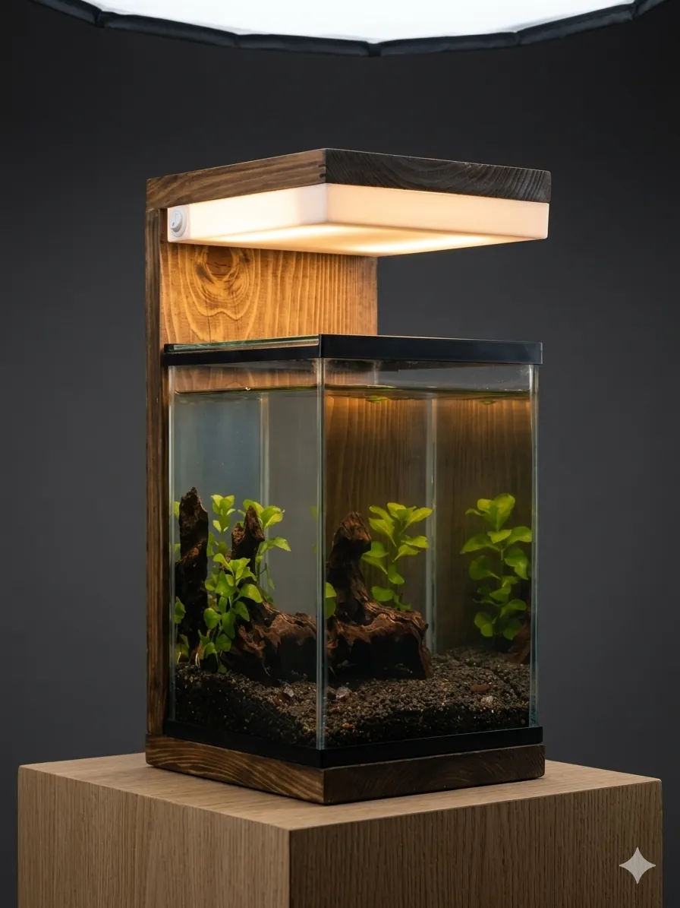
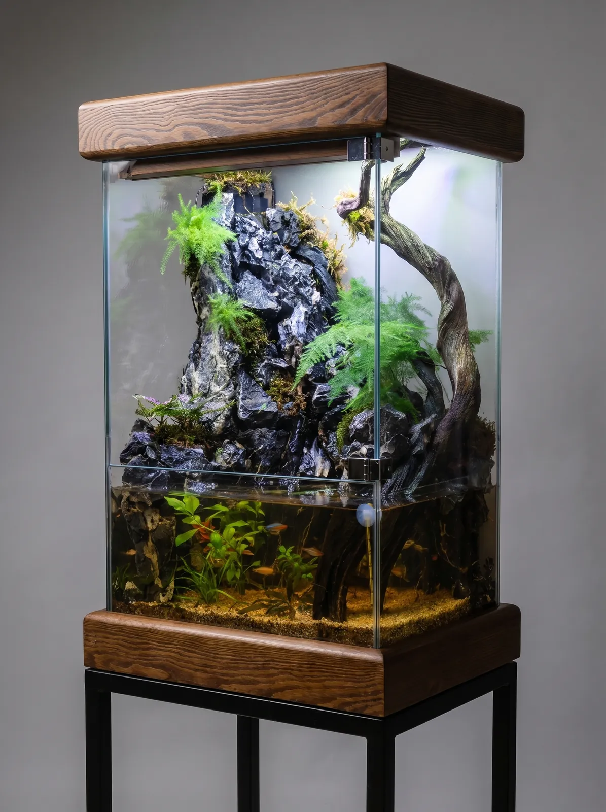
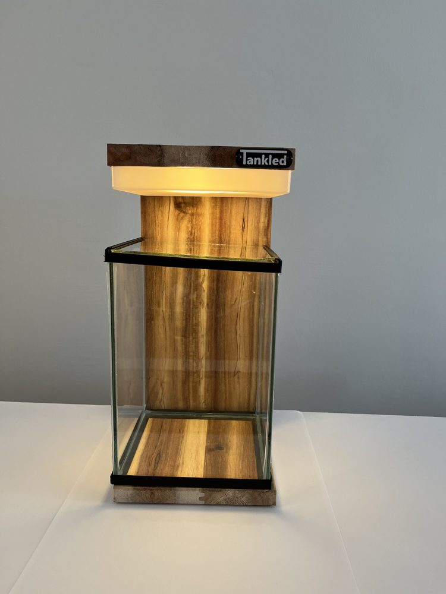

Bitkili akvaryum nasıl kurulur? Akvaryum bitkisi seçimi ve bakım

Bitkili akvaryum, canlı akvaryum bitkilerinin balıklar kadar önemli olduğu, doğal bir su altı bahçesidir. Bitkiler yalnızca güzel görünmez: suyu temizler, oksijen üretir, yosunla besin için rekabet eder ve balıklara saklanma alanı sağlar. Bu rehberde bitkili akvaryumun nasıl kurulacağını ve hangi akvaryum bitkisinin size uygun olduğunu adım adım anlatıyoruz.
Low-tech mi, high-tech mi?
- Low-tech bitkili akvaryum: CO₂ tüpü kullanılmaz; düşük-orta ışık ve yavaş büyüyen bitkilerle kurulur. Bakımı kolaydır, yeni başlayanlar için idealdir.
- High-tech bitkili akvaryum: Güçlü ışık, CO₂ ve düzenli gübreleme gerektirir. Halı bitkileri ve kırmızı bitkiler gibi zor türler hızla büyür, ancak dengeyi kurmak deneyim ister.
1. Zemin: bitkilerin besin deposu
Köklerinden beslenen bitkiler (cryptocoryne, kılıç otu, halı bitkileri) için besinli akvaryum toprağı en iyi seçimdir. Köklerini taşa ve köke tutturan anubias, java eğreltisi ve bucephalandra gibi bitkiler için ise zemin önemli değildir. Zemin türlerini akvaryum kumu ve zemin seçimi yazımızda karşılaştırdık.
2. Işık
Bitkiler için 6500K civarı gün ışığı tonu idealdir. Günde 6–8 saat aydınlatma yeterlidir; daha uzun süre yosun sorununa yol açar. Bir zamanlayıcı kullanmak ışık süresini sabit tutar.
3. Yeni başlayanlar için en kolay akvaryum bitkileri
- Anubias nana: Çok az ışıkla yaşar, taşa bağlanır, neredeyse bakım istemez.
- Java eğreltisi: Dayanıklı, köke bağlanan bir su bitkisi.
- Java yosunu: Taş ve köklerin üzerinde doğal bir görünüm oluşturur; karidesler sever.
- Cryptocoryne wendtii: Zemine dikilen, yavaş büyüyen ön-orta plan bitkisi.
- Hygrophila polysperma ve limnophila: Hızlı büyüyen sap bitkileri; yosunla en iyi rekabet edenler.
- Salvinia ve limnobium: Yüzey (yüzen) su bitkileri; fazla besini hızla tüketir.
Tüm bitkileri ışık, sıcaklık, pH ve zorluk derecesiyle akvaryum bitkileri rehberimizde filtreleyebilirsiniz.
4. Yerleşim: ön, orta ve arka plan
Kısa bitkileri (halı bitkileri, cryptocoryne) öne, orta boyları (anubias, bucephalandra) taş ve köklerin çevresine, uzun sap bitkilerini (vallisneria, rotala, limnophila) arkaya yerleştirin. Bu düzen derinlik hissi verir ve tüm bitkilerin ışık almasını sağlar.
5. Gübre ve CO₂
Low-tech akvaryumda balık atıkları ve haftalık az miktarda sıvı gübre çoğu zaman yeterlidir. Kök bitkileri için zemine kök tableti eklenebilir. CO₂ yalnızca güçlü ışık kullanılan high-tech sistemlerde gerekir.
6. İlk haftalar ve bakım
Bitkiler ilk haftalarda yeni ortama alışırken bazı yaprakların erimesi normaldir. Akvaryumu bol bitkiyle başlatmak, su döngüsü sırasında yosun riskini azaltır. Düzenli budama ve haftalık su değişimi için bakım rutinimize bakın; doğru filtreyi seçmek için akvaryum filtresi ve pompası rehberimizi okuyun.
Tankled akvaryumları, üç ışık tonlu LED aydınlatmasıyla bitkili low-tech kurulumlar için tasarlanmıştır. Ankara'daki atölyemizden bitkileri yerleştirilmiş hazır kurulum için bize ulaşın.
Ankara'da el yapımı akvaryum
Ostim'deki atölyemizde doğal masif ahşaptan mobilyalı ve dekoratif akvaryumlar üretiyoruz. Türkiye'nin 81 iline ve yurt dışına kargo yapıyoruz. Ölçünüze özel tasarım için bize ulaşın.
WhatsApp ile yazın Koleksiyonu inceleyinDiğer yazılar

Teraryum nasıl yapılır? Adım adım kapalı teraryum rehberi
Kapalı teraryum nasıl yapılır? Drenaj katmanı, aktif karbon, toprak, bitki seçimi ve nem dengesiyle evde kendi kendine yaşayan bir teraryum kurun.
Devamını oku →
Teraryum bitkileri ve teraryum bakımı: en kolay türler
Teraryum bitkileri hangileri? Kapalı ve açık teraryum için en uygun bitkiler, teraryum bakımı, sulama, ışık, küf ve buğu sorunlarına çözümler.
Devamını oku →
Dekoratif abajur fikirleri: içinde yaşam olan ahşap abajur
Salon ve yatak odası için dekoratif abajur fikirleri: ahşap abajur, sıcak ışık tonu seçimi ve içinde bitki ya da akvaryum olan yaşayan abajur tasarımı.
Devamını oku →